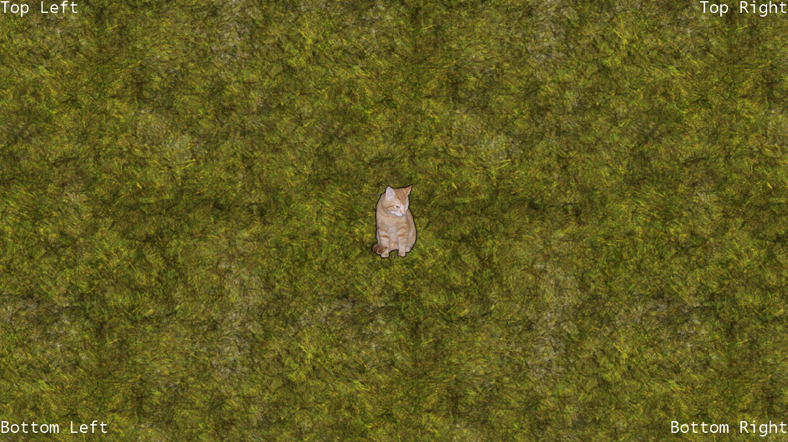

Safe Area
Ported from Microsoft's XNA 4.0 Safe Area.
Source for this sample on GitHub ↗

Play ▸Opens in a new tab and runs in this browser. Click the canvas first so it receives the keyboard.
About this sample
Safe Area shows how to keep important graphics inside a television's title-safe region. Four labels anchor to the safe area's corners through an aligned SpriteBatch helper rather than assuming that every display exposes its full edge-to-edge image.
Move the cat around the repeating background. The camera begins scrolling before the cat reaches the legal edge, accounting for the sprite's own dimensions and easing its velocity with friction after input stops.
The original sample can add a translucent red safe-area overlay in Xbox Debug builds. Like the original Windows version, this browser build leaves that diagnostic component disabled.
Controls
| Action | Keyboard | Gamepad |
|---|---|---|
| Move the cat | Arrow keys | Left stick |
| Exit | Esc | Back |
In the browser, exiting ends the sample rather than closing the tab.